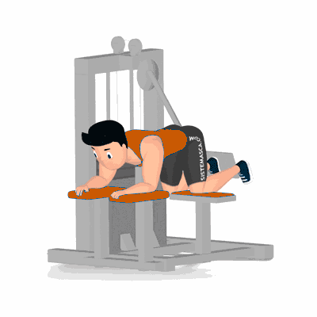

Glúteo no Aparelho

Exercício para hipertrofia e fortalecimento dos glúteos máximos, médio e mínimo.
Ficha Técnica
Tipo: Musculação
Grupo Muscular: Glúteo
Aparelho: Nenhum
Músculos: Nenhum
Como realizar
- Segure os pegadores do aparelho, deite sobre o apoio com as costas alinhas mantendo as curvaturas naturais;
- Pernas flexionadas sobre o suporte para os joelhos;
- Posicione um dos pés no suporte do braço do aparelho para execução do movimento;
- Empurre o suporte do aparelho o mais alto que conseguir utilizando o glúteo trabalhado;
- Retorne à posição inicial e repita os movimentos;
- Ao término, repita com o membro contralateral.
 RC STORE
RC STORE